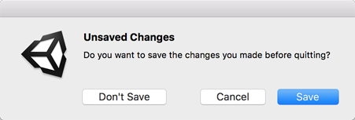

EditorUtility.DisplayDialogComplex
public static int DisplayDialogComplex
(string title,
string message,
string ok,
string cancel,
string alt);
参数
| title | 对话框名称。 |
| message | 对话框的用途。 |
| ok | 所选的对话框功能。 |
| cancel | 关闭对话框，不执行任何操作。 |
| alt | 选择备选的对话框用途。 |
返回
int
返回所选按钮的 ID。ID 为 0、1 或 2，分别对应于 cancel、cancel 和 alt 按钮。
描述
显示含有三个按钮的模态对话框。
用于在编辑器中显示消息框。DisplayDialogComplex 类似于 DisplayDialog。此 DisplayDialogComplex 成员
显示一个含三个按钮的对话框。这些按钮代表 cancel、cancel 和 DisplayDialogComplex。
DisplayDialogComplex 返回对应于 cancel、cancel 和 alt 按钮的整数 0、1 或 2。ok 按钮是默认选项，也可以按 Enter 键激活。cancel 按钮被认为是“cancel”按钮，通常不应执行任何操作。在 PC 上，也可以通过按 Escape 键或单击对话框窗口的关闭按钮来激活该按钮。在 Mac 上，也可以通过按 Escape 键来激活该按钮（前提是该按钮名为“Cancel”）。
除了 ok 和 cancel 按钮之外，alt 按钮还允许您为用户提供另一种选择。此按钮没有固定的键盘快捷键。
为遵从常规平台 UI 准则，按钮的实际显示顺序
将视平台而定。在 Windows 上，相应顺序为 /ok/、/alt/、/cancel/；
在 macOS 上，相应顺序为 /alt/、/cancel/、/ok/。
另请参阅：DisplayDialog。

针对以下示例的 macOS 显示对话框按钮。\
针对以下示例的 PC 显示对话框按钮。
以下脚本引用示例将创建一个复杂的显示对话框。所选按钮
将使系统调用 Unity EditorApplication 静态函数。
using UnityEngine; using UnityEditor;
public class DisplayDlgComplexExample : EditorWindow { // Lets you save or not before quitting, or cancel.
[MenuItem("Example/Quit")] static void Init() { int option = EditorUtility.DisplayDialogComplex("Unsaved Changes", "Do you want to save the changes you made before quitting?", "Save", "Cancel", "Don't Save");
switch (option) { // Save. case 0: EditorApplication.SaveScene(EditorApplication.currentScene); EditorApplication.Exit(0); break;
// Cancel. case 1: break;
// Don't Save. case 2: EditorApplication.Exit(0); break;
default: Debug.LogError("Unrecognized option."); break; } } }